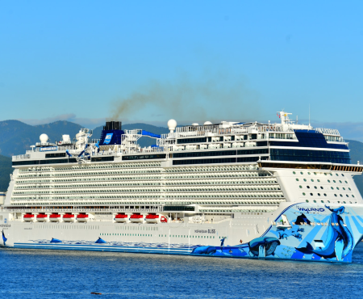

Chooose Our Fleet

Popular Destinations

Cruising Europe
Peer over the side of your cruise ship as it approaches the best places to visit in Europe — do you see weathered spires of old-town Copenhagen, or the sun-bleached houses of Santorini? No matter which of the European cruises you choose, whether you hug the colorful cliffs of the Mediterranean or the Celtic cliffs of the British Isles, the eclecticism of Europe will delight you again and again. Culinary excellence also awaits, from familiar favorites like Italian pasta and Spanish tapas, to lesser-known cuisines from Amsterdam to Zagreb. In Europe, inspiration flows like Croatia's waterfalls and France's famous rivers, so now is the time to dive in.
View Destinations